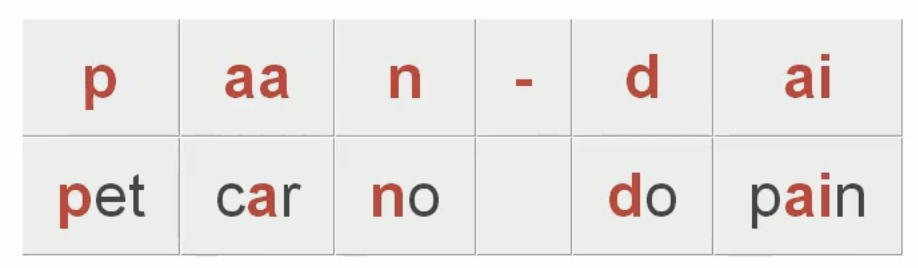
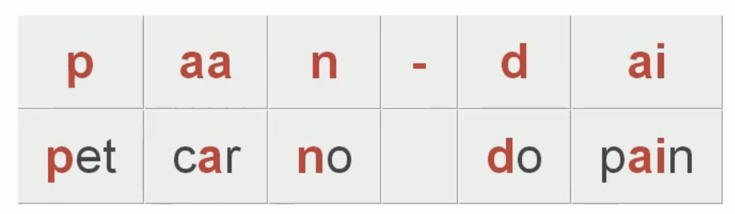

Hello, I'm Vineet Pandey.
I'm a Human-computer interaction researcher.
I specialize in designing social computing systems.
I build telemedicine and citizen science systems that enable communities to track data create knowledge about personally-meaningful topics such as gut health & neurological impairment. I believe that the current approach of relying solely on institutional experts to create knowledge is insufficient to meet the scale, diversity, and novelty of people’s needs. To answer this fundamental societal and intellectual challenge, my research systems build on (and improve) computational techniques, experts' knowledge, and people's capacity.
Postdoctoral Fellow at Harvard University
I'm developing platforms that support patients people with disorders, caregivers, and clinicians in creating novel, useful knowledge about rare disorders. Our current web-based tool accurately and reliably estimates motor impairments in a neurological rare disorder with a few minutes of unsupervised use from home.
I currently work with Krzysztof Gajos (Computer Science, Harvard) and Dr. Anoopum Gupta (Laboratory for Deep Neurophenotyping, Neurology, Mass General Hospital).
Ph.D. in Computer Science from UC San Diego (csrankings.org)
My dissertation was awarded 2019 Jacobs School of Engineering Henry Booker Award for Exemplary Ethical Engineering. My dissertation research created scalable techniques for integrating learning and working for complex activities like scientific experimentation. My research platform Gut Instinct has been used by over 600 people from 30 countries to create novel hypotheses, design experiments, and replicate known results.
I was advised by Scott Klemmer at UC San Diego Design Lab. I collaborated closely with Rob Knight and the excellent community of microbiome researchers and fermenters in San Diego.
Published/presented transdisciplinary research at many venues
- Human-computer interaction (ACM CHI; ACM CSCW)
- Microbiology (American Society of Microbiology)
- Neurology (The Cerebellum; MGH Ataxia Center Symposium)
- Sustainability (LIMITS workshop at ICT4Sustainability)
- Learning and Creativity (ACM Learning@Scale)
Multiple undergraduate and graduate classes have included my research in their syllabi
CSCI 490: Computing and Global Change by Barath Raghavan at University of Southern California (USC)
COMP_SCI 496: Interactive Systems for Health Behavior Change by Maia Jacobs at Northwestern University
CS 179: Design of Useful and Usable Interactive Systems by Elena Glassman at Harvard University
Papers co-authored by me have also been included in other Computer Science classes/seminars/Comp exam requirements at Brown, CMU, Northwestern, Sewanee, and UIUC.
I grew up in Ranchi, a relatively small town--by Indian standards--in Eastern India. I pursued my undergraduate degree in Computer Science at BITS Pilani. Apart from HCI research, I have published research creating systems and data structures for efficient integrity checks in databases, low failover time in datacenters, and quick arithmetic operations with novel integer representations. Backpacking across four countries before starting graduate school convinced me that the relation between technology and people was broken across many societies. Consequently, I switched to Human-Computer Interaction research in late 2014.
Main Projects
Citizen-Expert Collaboration with Telemedicine Tools

Collaborators (academic): Laboratory for Deep Neurophenotyping at Mass General Hospital
Collaborators (community): A-T Children's Project
System: Try it »(Beta - mail for access)
Slides: 2021 Mass General Hospital Ataxia Center Symposium
Papers: HCI submission (in preparation); 2021 The Cerebellum (June, Issue#3) ; 2020 AMIA WISH; 2020 LIMITS
Posters: 2020 AMIA WISH
{kind=link}
Gut Instinct: Citizen-led Experimentation with a Bespoke Social Computing Platform

Collaborators (academic): American Gut Project, Knight Lab - Microbiology
Collaborators (community): Open Humans, Fermenter communities
System: Video summary, Code,
Slides: 2021 CHI, 2018 MIT Innovation Lab, 2018 ACM Learning at Scale, 2017 ACM CHI
Papers: 2021 ACM CHI, 2018 CSCW Doctoral Consortium, 2018 ACM Learning at Scale, CHI 2017
Posters: 2018 Research Expo, 2017 San Diego Maker Faire
{kind=link}
{kind=link}
News: Short NPR interview , UC San Diego Design Lab news story
Full Papers
- For reference material (e.g. bibtex entries), please try Google Scholar.
-
Unsupervised use of web-based tool reliably estimates severity of a neurological rare disorder
In Preparation for a HCI/Accessibility venue
Vineet Pandey, Collaborators
-
Free-living motor activity monitoring in ataxia-telangiectasia
2021 The Cerebellum (June, Issue#3)
Nergis C Khan, Vineet Pandey, Krzysztof Z Gajos, Anoopum S Gupta
-
Galileo: Citizen-led Experimentation using a Social Computing System
2021 ACM CHI
Vineet Pandey, Tushar Koul, Chen Yang, Mad Price Ball, Bastian Greshake Tzovaras, Daniel McDonald, Rob Knight, Scott Klemmer
-
From novices to co-pilots: Fixing the limits on scientific knowledge production by accessing or building expertise
2020 LIMITS
Vineet Pandey, Anoopum Gupta, Krzysztof Gajos -
American gut: an open platform for citizen science microbiome research
2018 American Society of Microbiology mSystems
Daniel McDonald, Rob Knight, American Gut Consortium (includes me)
-
Docent: Transforming Personal Intuitions to Scientific Hypotheses through Content Learning and Process Training
2018 ACM Learning at Scale
Vineet Pandey, A. Amir, J. Debelius, Embriette Hyde, Tomasz Kosciolek, Rob Knight, Scott Klemmer
-
Gut Instinct: Creating Scientific Theories with Online Learners
2017 ACM CHI
Vineet Pandey, A. Amir, J. Debelius, Embriette Hyde, Tomasz Kosciolek, Rob Knight, Scott Klemmer
-
Concerto: A High Concurrency Key-Value Store with Integrity
2017 ACM SIGMOD
Arvind Arasu, Ken Eguro, Raghav Kaushik, Donald Kossmann, Pingfan Meng, Vineet Pandey, Ravi Ramamurthy
News: CSE UCSD
-
Framing Feedback: Choosing Review Environment Features that Support High Quality Peer Assessment
2016 ACM CHI
Catherine M. Hicks, Vineet Pandey, C. Ailie Fraser, Scott Klemmer
Poster by Crystal Kwok and Rachel Chen, Slides News -
An HCI View of Configuration Problems
2016 arXiv
Tianyin Xu, Vineet Pandey, Scott Klemmer
-
Integer Representations towards Efficient Counting in the Bit Probe Model
2014 Journal of Discrete Algorithms 2014; 2011 TAMC
Gerth S. Brodal, Mark Greve, Vineet Pandey, S. Srinivasa Rao
{kind=link}
Short Papers / Extended Abstracts
-
Beyond Data Tracking: A Proposal to Design Health Interfaces for Learning and Sharing
2021 ACM IUI Workshop: Healthy Interfaces (HEALTHI)
Vineet Pandey
-
Neurological assessments without clinical supervision for a rare disease
2020 AMIA Workgroup on Interactive Systems in Health (WISH)
Vineet Pandey
-
Citizen Microbiology: Moving Beyond Crowdsourcing to Active, Participatory Science by the Public
2019 American Society of Microbiology
Vineet Pandey
-
Improving Health Outcomes by Integrating Personal Knowledge, Community, and Data
2019 ACM CHI Workshop: Body As Starting Point
Vineet Pandey
-
Reconstruction Reduces Fixation on Surface Details of Explanations
2019 ACM Creativity & Cognition
Sam Lau, Tricia Ngoon, Vineet Pandey, Scott Klemmer
-
Gut Instinct: Creating Scientific Theories with Online Communities
2018 ACM CSCW Doctoral Consortium
Vineet Pandey
-
Transitioning the American Gut Project to the Microsetta Initiative
2018 American Society of Microbiology
Daniel McDonald, Alexander Aksenov, Alexey Melnik, Pieter Dorrestein, Larry Smarr, Rashmi Sinha, Vineet Pandey, Scott Klemmer, Rob Knight
-
Integrating Citizen Science with Online Learning to Ask Better Questions
2016 AAAI HCOMP
Vineet Pandey, Scott Klemmer, Amnon Amir, Justine Debelius, Embriette Hyde, Tomasz Kosciolek, Rob Knight
-
Game-theoretic Models Identify Useful Principles for Peer Collaboration in Online Learning Platforms
2016 ACM CSCW
Vineet Pandey, Krishnendu Chatterjee
Poster
-
Education Across Borders: Technology Supported Mentoring and Teambuilding
2016 ACM CHI Workshop: HCI Across Borders
Vineet Pandey
-
Connecting Stories and Pedagogy Increases Participant Engagement in Discussions Poster
2015 ACM Learning at Scale
Vineet Pandey, Yasmine Kotturi, Chinmay Kulkarni, Michael Bernstein, Scott Klemmer
Poster, News
{kind=link}
Students Mentored
Aleksandra Koralczyk
Lodz University of Technology, Poland; Visting Student at Harvard University
Auxiliary Supervisor for Undergraduate Thesis
Katharina Kloppenborg
Center for Research and Interdisciplinarity, Université de Paris (UdP
Thesis Advisor Committee
Aliyah Clayton Cypress College -> UC Irvine BS
*Summer Training Academy for Research Success (STARS) program
Brian Soe
CSE BS -> GE Digital -> PlanGrid
Chen Yang
CSE BS -> Google
Cody Doan
CSE BS -> ViaSat
Crystal Kwok
Cognitive Science BS -> Bluebeam
Dingmei Gu
CSE BS -> CSE MS
Hedy Wang
Cognitive Science BS 2021
Kaung Yang
CSE BS -> ServiceNow
*CSE Early Research Scholars Program
Liby Lee
CSE BS -> U.Penn Ph.D.
Orr Toledano
CSE BS 2020
*CSE Early Research Scholars Program
Rachel Chen
Cognitive Science BS -> Georgia Tech MS-HCI
Robert Goebel
High Tech High
Sam Lau
Cognitive Science PhD
Tushar Koul
CSE MS 2017 -> TaskRabbit
Books reading now
Data Feminism by Catherine D’Ignazio
A Collection of Essays by George Orwell
Don Quixote by Miguel de Cervantes
This website is heavily inspired from Arvind Satyanarayan's webpage. The original page was designed by Manjeet Singh Sawhney.
देखो मगर प्यार से